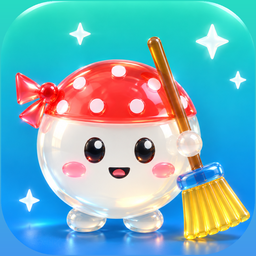

픽싹 - 캡처 정리
기프티콘 유효기간은 챙기고, 쌓인 스크린샷은 싹 정리해요.
문의
앱 사용 중 문제나 제안은 아래 메일로 보내 주세요. 기기 모델과 iOS 버전을 함께 적어 주시면 빨리 확인할 수 있어요.
자주 묻는 질문
사진이 외부로 전송되나요?
아니요. 스크린샷 분석은 모두 기기 안에서 이루어지고, 개발자는 서버를 운영하지 않아요.
기프티콘이 목록에 안 나와요.
픽싹은 iOS가 '스크린샷'으로 표시한 사진만 읽어요. 메신저에서 저장한 이미지는 대상이 아니에요. 사진 접근을 '선택한 사진만'으로 허용했다면 홈 화면에서 확인할 사진을 추가해 주세요.
지운 사진을 되살릴 수 있나요?
네. 사진 앱의 '최근 삭제된 항목'에 30일간 남아 있어요.
광고 제거를 다시 적용하려면?
같은 Apple 계정으로 로그인한 뒤 앱 설정의 '구매 복원'을 눌러 주세요.